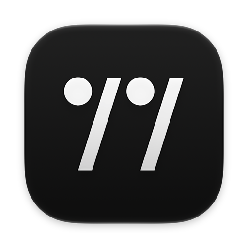
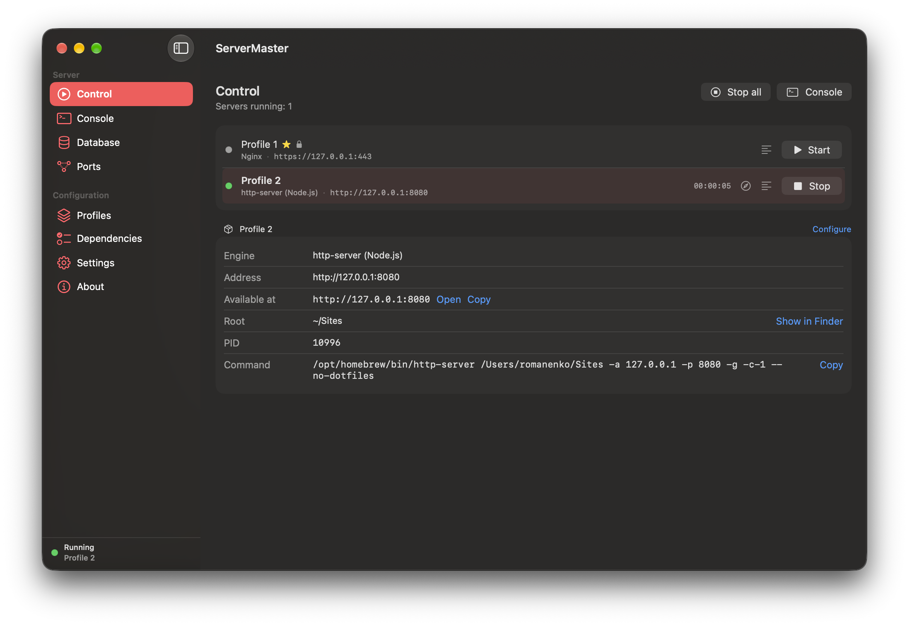
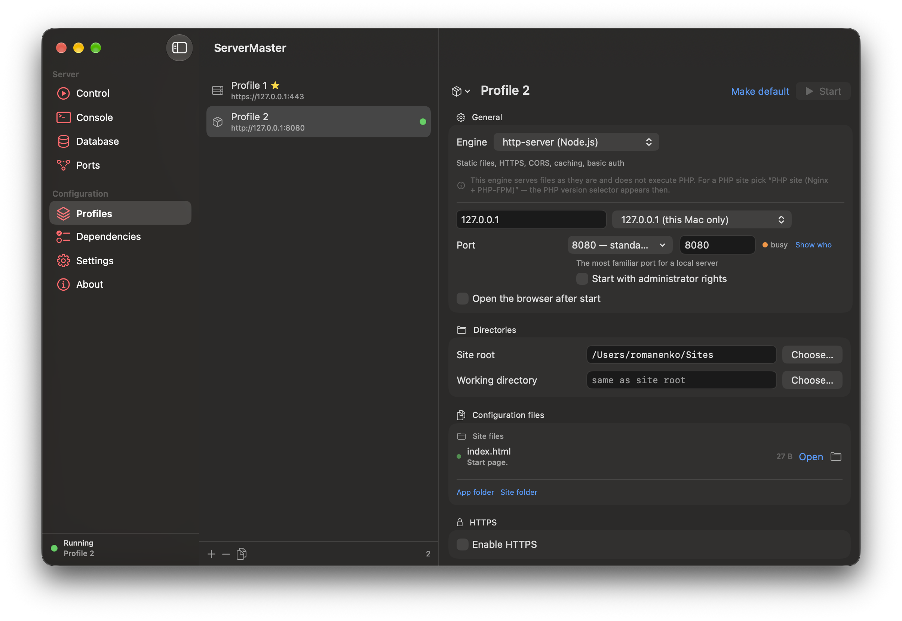
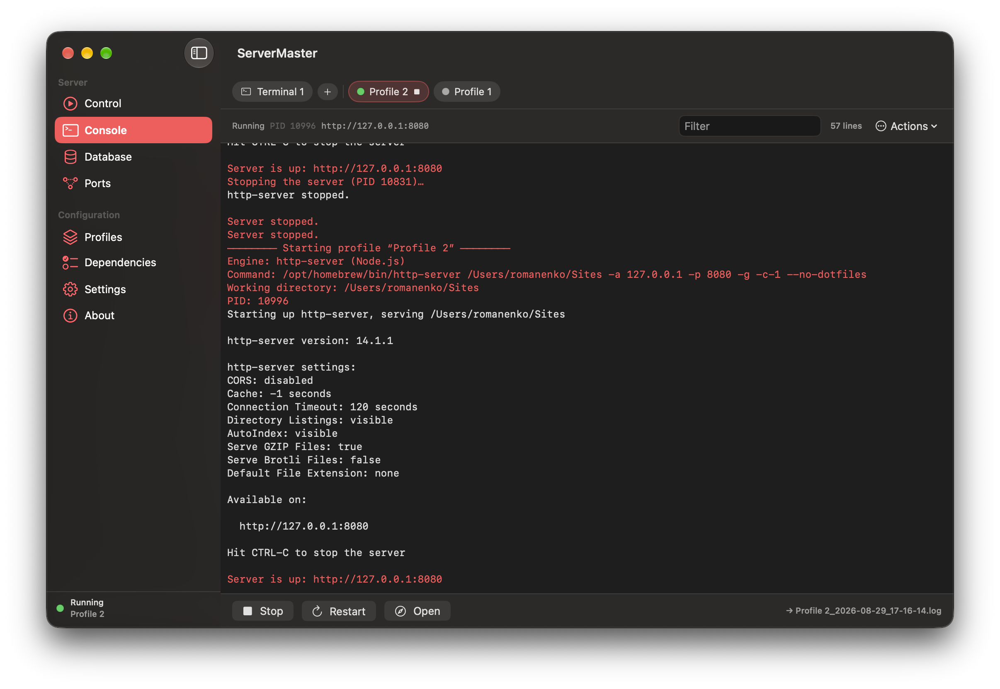
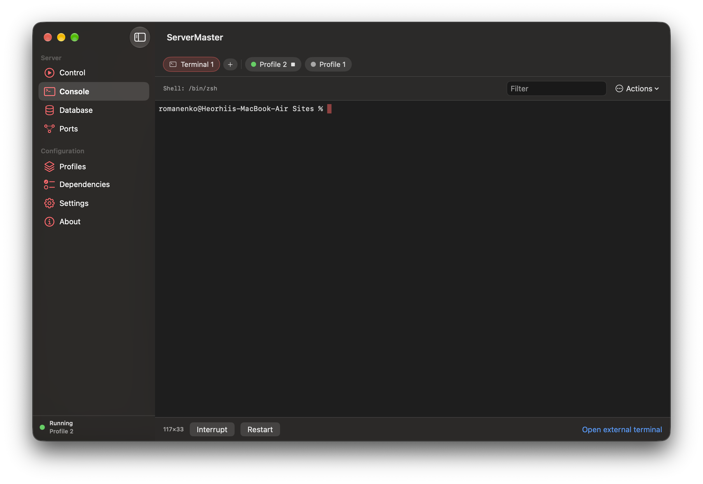
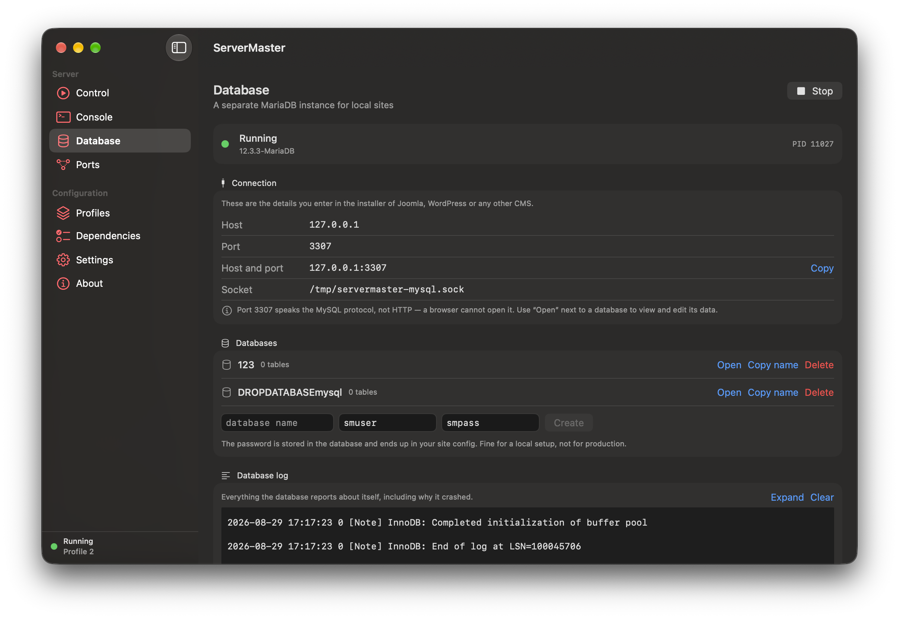
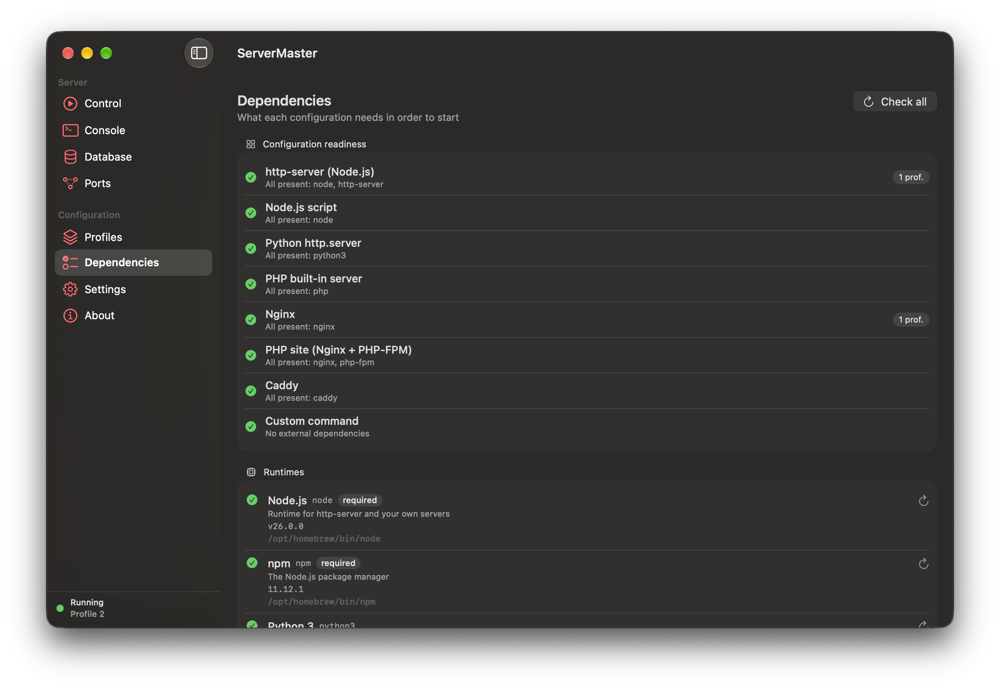
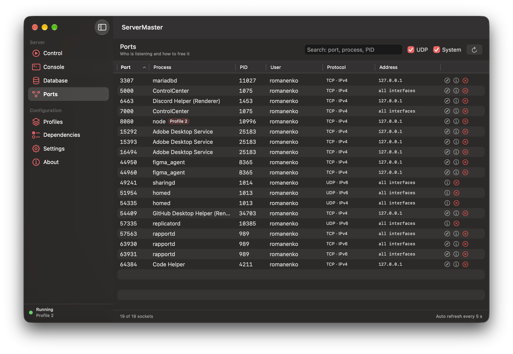
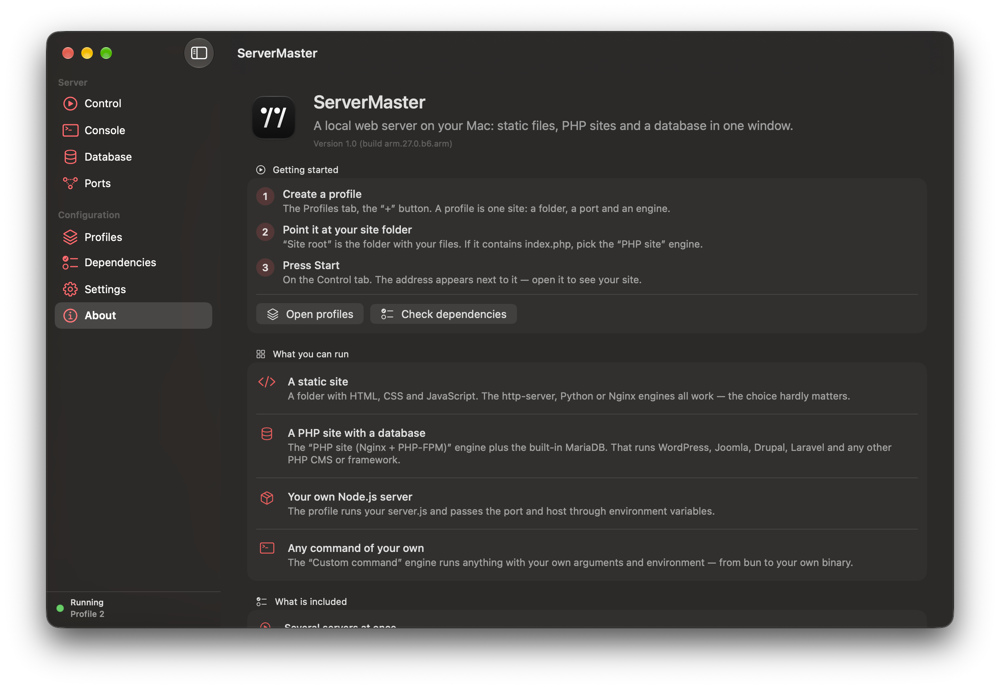

ServerMaster
Local web servers on your Mac — Nginx, PHP, Node.js, Caddy and MariaDB — started from one window, with logs you can actually read.
Reading the build number
It is not a counter. It records where the build came from.
- arm
- Built on Apple Silicon.
- 27.0
- The macOS version it was built against — SDK and Xcode match it.
- b6
- Developer beta 6 of that system. Absent once the system ships.
- arm
- What the binary runs on:
armApple Silicon only,uniuniversal.
What it is
ServerMaster is an open-source macOS app for running web servers on your own machine. You point it at a folder, pick what should serve it, and press Start. Everything a local server drags along — the config file, the PHP process, the database, the certificate, the logs — is handled in the same window.
It was built for the moment a stack refuses to cooperate and the error is a bare exit code. Every server writes its own log, PHP errors are never swallowed, and a failed start is explained in a sentence instead of a number.
Who it is for
- A student told to get Joomla, WordPress or Drupal running by Friday, with no interest in becoming a sysadmin first.
- A front-end developer who needs one folder on one port to debug some JavaScript, and does not want to think about ports at all.
- Anyone leaving XAMPP or MAMP who wants the same convenience without a bundled stack taking over the system.
What it can do
- Eight engines. http-server and plain Node.js scripts, Python's
http.server, PHP's built-in server, Nginx, Nginx + PHP-FPM, Caddy, or any command you type yourself. - Several servers at once. Every profile has its own tab, port and engine, started and stopped independently — not one Apache for everything.
- A PHP version per profile. An old project on 8.3 and a new one on 8.5 run side by side; the version belongs to the profile, not to the whole machine.
- A database that keeps to itself. MariaDB runs in its own folder on its own port, so a MySQL you already have is left untouched. Browse tables, edit cells and add rows without writing SQL.
- HTTPS. Generate a self-signed certificate, or use mkcert so the browser trusts it without a warning.
- Ports 80 and 443. Those need root; the password is asked once by a macOS window, and stopping the server later needs no password at all.
- A real terminal. A true pseudo-terminal, so
vim,top, Ctrl-C and window resizing behave exactly as they do in Terminal.app — in as many tabs as you like. - Error pages you control. Custom pages for 404, 403, 500 and the rest, so a local folder behaves like a real site.
- Basic hardening. Deny access to dotfiles like
.envand.git, set security headers, switch on HSTS. Where an engine cannot honestly do this, the app says so instead of pretending. - Dependencies, checked and installed. It tells you what is missing for the configuration you chose and installs it through Homebrew.
- Ports, visible. See what is listening, which process holds it, and stop it from the same screen.
- Configs, edited safely. Open the generated
nginx.conf,Caddyfile,php.inior pool config, edit it, and have the syntax checked before it is written — a broken config never reaches disk.
A look inside
Screenshots from a working install.
Control
Every profile in one list. Start, stop, see the address, the running time and the exact command that was executed.

Profiles
Where a server is described: root folder, engine, port, PHP version, certificate, error pages and protection options.

Console
A tab per running server with its own log, so output from two servers never lands in the same stream.

Terminal
A genuine pseudo-terminal, not a command box. Interactive programs, job control and colours all work.

Database
A managed MariaDB instance with ready-made connection details to paste into a CMS installer, plus a table browser.

Dependencies
What each engine needs, what is present, what is missing — and a button to install it.

Ports
Everything listening on the machine, the process behind it, and a way to free the port.

About
A short tour built into the app, for anyone opening it for the first time.

Before you download
macOS 27, Apple Silicon. The current build is Apple Silicon only. A universal build for Intel is planned, not shipped.
Homebrew. The engines and the database are the real ones, not copies bundled into the app. ServerMaster checks what is missing and can install it for you.
This build is not notarized yet. It is signed with a development
certificate, so Gatekeeper will refuse it on first launch. Open it once with
right-click → Open, or remove the quarantine flag with
xattr -d com.apple.quarantine ServerMaster.app. A notarized build is
on the way.